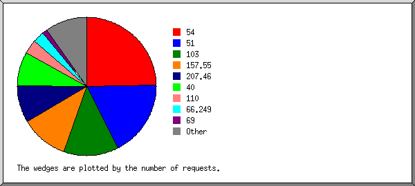
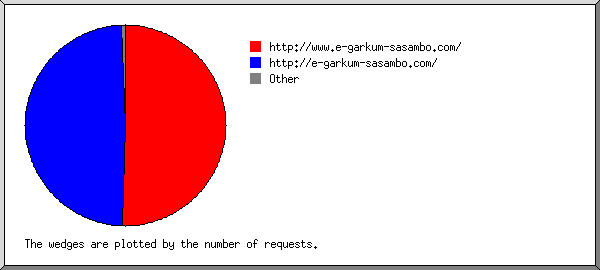
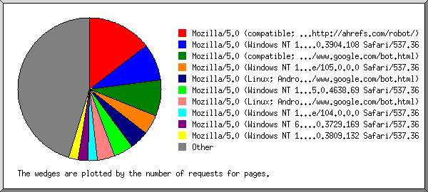
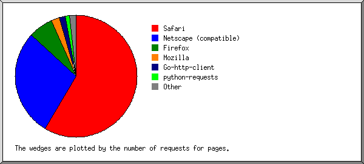
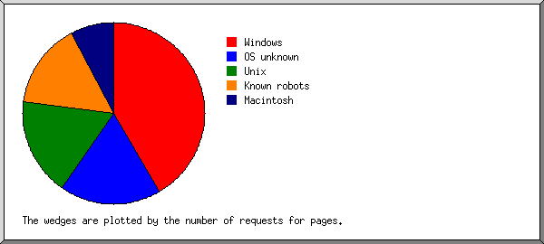
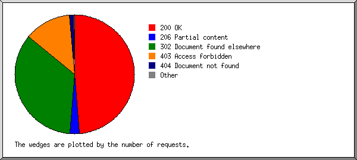
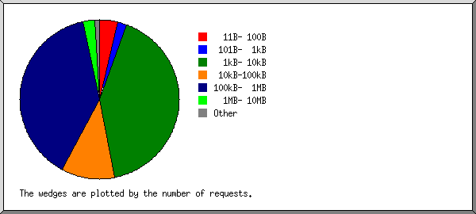
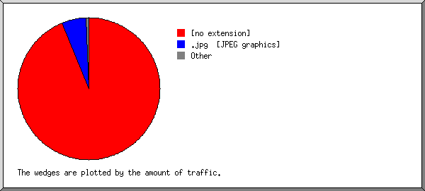
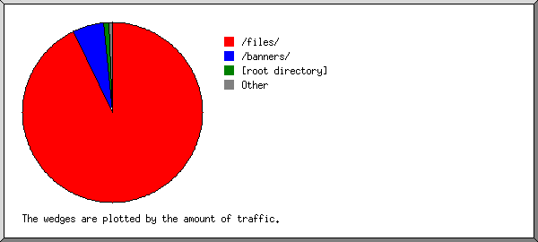
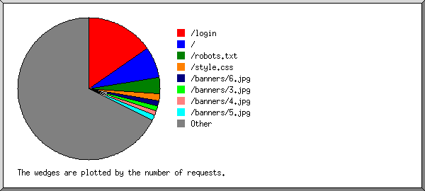

Web Server Statistics for e-garkum-sasambo.com
Web Server Statistics for e-garkum-sasambo.com
Program started on Thu, Sep 22 2022 at 8:37 PM.
Analyzed requests from Wed, Aug 31 2022 at 10:27 AM to Thu, Sep 22 2022 at 6:59 PM (22.36 days).
Web Server Statistics for e-garkum-sasambo.comProgram started on Thu, Sep 22 2022 at 8:37 PM.
Analyzed requests from Wed, Aug 31 2022 at 10:27 AM to Thu, Sep 22 2022 at 6:59 PM (22.36 days).
(Go To: Top | General Summary | Monthly Report | Daily Summary | Hourly Summary | Domain Report | Organization Report | Redirected Referrer Report | Failed Referrer Report | Referring Site Report | Browser Report | Browser Summary | Operating System Report | Status Code Report | File Size Report | File Type Report | Directory Report | Request Report)
Figures in parentheses refer to the 7-day period ending Sep 22 2022 at 8:37 PM.
Successful requests: 2,597 (260)
Average successful requests per day: 116 (37)
Successful requests for pages: 184 (59)
Average successful requests for pages per day: 8 (8)
Failed requests: 707 (56)
Redirected requests: 1,767 (5)
Distinct files requested: 837 (2,430)
Distinct hosts served: 488 (551)
Data transferred: 335.13 megabytes (41.18 megabytes)
Average data transferred per day: 14.99 megabytes (5.88 megabytes)
(Go To: Top | General Summary | Monthly Report | Daily Summary | Hourly Summary | Domain Report | Organization Report | Redirected Referrer Report | Failed Referrer Report | Referring Site Report | Browser Report | Browser Summary | Operating System Report | Status Code Report | File Size Report | File Type Report | Directory Report | Request Report)
Each unit ( ) represents 5 requests for pages or part thereof.
) represents 5 requests for pages or part thereof.
| month | #reqs | #pages | |
|---|---|---|---|
| Aug 2022 | 228 | 15 |  |
| Sep 2022 | 2369 | 169 |  |
Busiest month: Sep 2022 (169 requests for pages).
(Go To: Top | General Summary | Monthly Report | Daily Summary | Hourly Summary | Domain Report | Organization Report | Redirected Referrer Report | Failed Referrer Report | Referring Site Report | Browser Report | Browser Summary | Operating System Report | Status Code Report | File Size Report | File Type Report | Directory Report | Request Report)
Each unit () represents 1 request for a page.
| day | #reqs | #pages | |
|---|---|---|---|
| Sun | 219 | 17 |  |
| Mon | 334 | 24 |  |
| Tue | 284 | 23 |  |
| Wed | 575 | 44 | |
| Thu | 546 | 29 | |
| Fri | 303 | 26 | |
| Sat | 336 | 21 | |
(Go To: Top | General Summary | Monthly Report | Daily Summary | Hourly Summary | Domain Report | Organization Report | Redirected Referrer Report | Failed Referrer Report | Referring Site Report | Browser Report | Browser Summary | Operating System Report | Status Code Report | File Size Report | File Type Report | Directory Report | Request Report)
Each unit () represents 1 request for a page.
| hour | #reqs | #pages | |
|---|---|---|---|
| 0 | 86 | 8 | |
| 1 | 72 | 3 | |
| 2 | 79 | 8 | |
| 3 | 65 | 6 | |
| 4 | 123 | 2 | |
| 5 | 73 | 7 | |
| 6 | 109 | 4 | |
| 7 | 131 | 10 | |
| 8 | 224 | 12 | |
| 9 | 151 | 9 | |
| 10 | 136 | 14 | |
| 11 | 113 | 9 | |
| 12 | 91 | 6 | |
| 13 | 103 | 11 | |
| 14 | 93 | 7 | |
| 15 | 232 | 9 | |
| 16 | 86 | 6 | |
| 17 | 89 | 7 | |
| 18 | 94 | 4 | |
| 19 | 89 | 6 | |
| 20 | 108 | 11 | |
| 21 | 63 | 12 | |
| 22 | 78 | 6 | |
| 23 | 109 | 7 | |
(Go To: Top | General Summary | Monthly Report | Daily Summary | Hourly Summary | Domain Report | Organization Report | Redirected Referrer Report | Failed Referrer Report | Referring Site Report | Browser Report | Browser Summary | Operating System Report | Status Code Report | File Size Report | File Type Report | Directory Report | Request Report)
Listing domains, sorted by the amount of traffic.
| #reqs | %bytes | domain |
|---|---|---|
| 2597 | 100% | [unresolved numerical addresses] |
(Go To: Top | General Summary | Monthly Report | Daily Summary | Hourly Summary | Domain Report | Organization Report | Redirected Referrer Report | Failed Referrer Report | Referring Site Report | Browser Report | Browser Summary | Operating System Report | Status Code Report | File Size Report | File Type Report | Directory Report | Request Report)

Listing the top 20 organizations by the number of requests, sorted by the number of requests.
| #reqs | %bytes | organization |
|---|---|---|
| 642 | 22.67% | 54 |
| 462 | 10.09% | 51 |
| 332 | 19.09% | 103 |
| 288 | 24.09% | 157.55 |
| 224 | 12.29% | 207.46 |
| 207 | 7.92% | 40 |
| 87 | 0.52% | 110 |
| 70 | 0.05% | 66.249 |
| 33 | 0.43% | 69 |
| 21 | 0.65% | 149.56 |
| 16 | 0.41% | 65.154 |
| 15 | 0.21% | 112 |
| 12 | 0.01% | 167.94 |
| 12 | 0.06% | 20 |
| 12 | 0.21% | 182.16 |
| 11 | 0.21% | 36 |
| 11 | 0.21% | 182.23 |
| 9 | 0.21% | 203.78 |
| 9 | 114 | |
| 8 | 0.01% | 35 |
| 116 | 0.64% | [not listed: 54 organizations] |
(Go To: Top | General Summary | Monthly Report | Daily Summary | Hourly Summary | Domain Report | Organization Report | Redirected Referrer Report | Failed Referrer Report | Referring Site Report | Browser Report | Browser Summary | Operating System Report | Status Code Report | File Size Report | File Type Report | Directory Report | Request Report)
Listing referring URLs, sorted by the number of redirected requests.
| #reqs | URL |
|---|---|
| 2 | http://e-garkum-sasambo.com/login |
(Go To: Top | General Summary | Monthly Report | Daily Summary | Hourly Summary | Domain Report | Organization Report | Redirected Referrer Report | Failed Referrer Report | Referring Site Report | Browser Report | Browser Summary | Operating System Report | Status Code Report | File Size Report | File Type Report | Directory Report | Request Report)
Listing referring URLs, sorted by the number of failed requests.
| #reqs | URL |
|---|---|
| 4 | http://e-garkum-sasambo.com/ |
(Go To: Top | General Summary | Monthly Report | Daily Summary | Hourly Summary | Domain Report | Organization Report | Redirected Referrer Report | Failed Referrer Report | Referring Site Report | Browser Report | Browser Summary | Operating System Report | Status Code Report | File Size Report | File Type Report | Directory Report | Request Report)

Listing referring sites, sorted by the number of requests.
| #reqs | site |
|---|---|
| 256 | http://www.e-garkum-sasambo.com/ |
| 249 | http://e-garkum-sasambo.com/ |
| 2 | https://www.google.com/ |
| 1 | https://www.bing.com/ |
(Go To: Top | General Summary | Monthly Report | Daily Summary | Hourly Summary | Domain Report | Organization Report | Redirected Referrer Report | Failed Referrer Report | Referring Site Report | Browser Report | Browser Summary | Operating System Report | Status Code Report | File Size Report | File Type Report | Directory Report | Request Report)

Listing the top 40 browsers by the number of requests for pages, sorted by the number of requests for pages.
| #reqs | #pages | browser |
|---|---|---|
| 1100 | 27 | Mozilla/5.0 (compatible; AhrefsBot/7.0; +http://ahrefs.com/robot/) |
| 15 | 15 | Mozilla/5.0 (Windows NT 10.0; Win64; x64) AppleWebKit/537.36 (KHTML, like Gecko) Chrome/78.0.3904.108 Safari/537.36 |
| 30 | 15 | Mozilla/5.0 (compatible; Googlebot/2.1; +http://www.google.com/bot.html) |
| 400 | 8 | Mozilla/5.0 (Windows NT 10.0; Win64; x64) AppleWebKit/537.36 (KHTML, like Gecko) Chrome/105.0.0.0 Safari/537.36 |
| 10 | 8 | Mozilla/5.0 (Linux; Android 6.0.1; Nexus 5X Build/MMB29P) AppleWebKit/537.36 (KHTML, like Gecko) Chrome/105.0.5195.102 Mobile Safari/537.36 (compatible; Googlebot/2.1; +http://www.google.com/bot.html) |
| 8 | 8 | Mozilla/5.0 (Windows NT 10.0; Win64; x64) AppleWebKit/537.36 (KHTML, like Gecko) Chrome/95.0.4638.69 Safari/537.36 |
| 11 | 7 | Mozilla/5.0 (Linux; Android 6.0.1; Nexus 5X Build/MMB29P) AppleWebKit/537.36 (KHTML, like Gecko) Chrome/104.0.5112.101 Mobile Safari/537.36 (compatible; Googlebot/2.1; +http://www.google.com/bot.html) |
| 37 | 4 | Mozilla/5.0 (Windows NT 10.0; Win64; x64) AppleWebKit/537.36 (KHTML, like Gecko) Chrome/104.0.0.0 Safari/537.36 |
| 4 | 4 | Mozilla/5.0 (Windows NT 6.1; Win64; x64) AppleWebKit/537.36 (KHTML, like Gecko)Chrome/74.0.3729.169 Safari/537.36 |
| 4 | 4 | Mozilla/5.0 (Windows NT 10.0; Win64; x64) AppleWebKit/537.36 (KHTML, like Gecko) Chrome/76.0.3809.132 Safari/537.36 |
| 4 | 4 | Mozilla/5.0 (Windows NT 10.0; Win64; x64; rv:104.0) Gecko/20100101 Firefox/104.0 |
| 4 | 4 | Mozilla/5.0 (Windows NT 10.0; Win64; x64) AppleWebKit/537.36 (KHTML, like Gecko) Chrome/88.0.4240.193 Safari/537.36 |
| 8 | 4 | Mozilla/5.0 (X11; Linux x86_64) AppleWebKit/537.36 (KHTML, like Gecko) Chrome/83.0.4103.97 Safari/537.36 |
| 9 | 4 | Mozilla/5.0 (compatible; CensysInspect/1.1; +https://about.censys.io/) |
| 20 | 3 | Mozilla/5.0 (compatible; Dataprovider.com) |
| 19 | 3 | Go-http-client/1.1 |
| 2 | 2 | Mozilla/5.0 (Macintosh; Intel Mac OS X 10_11_5) AppleWebKit/537.36 (KHTML, like Gecko) Chrome/50.0.2661.102 Safari/537.36 |
| 8 | 2 | Mozilla/5.0 (compatible; ips-agent) |
| 3 | 2 | Mozilla/5.0 (Windows NT 10.0; Win64; x64) AppleWebKit/537.36 (KHTML, like Gecko) Chrome/91.0.4472.114 Safari/537.36 Edg/91.0.864.54 |
| 2 | 2 | python-requests/2.27.1 |
| 2 | 2 | Mozilla/5.0 (Windows NT 10.0; Win64; x64) AppleWebKit/537.36 (KHTML, like Gecko) Chrome/89.0.4389.114 Safari/537.36 |
| 2 | 2 | Mozilla/5.0 (Windows NT 10.0; Win64; x64) AppleWebKit/537.36 (KHTML, like Gecko) Chrome/80.0.3987.149 Safari/537.36 |
| 16 | 2 | Mozilla/5.0 (Windows NT 10.0; Win64; x64) AppleWebKit/537.36 (KHTML, like Gecko) Chrome/76.0.3809.71 Safari/537.36 |
| 2 | 2 | Mozilla/5.0 (Windows NT 10.0; Win64; x64; rv:64.0) Gecko/20100101 Firefox/64.0 |
| 1 | 1 | Mozilla/5.0 (Linux; Android 6.0.1; Nexus 5X Build/MMB29P) AppleWebKit/537.36 (KHTML, like Gecko) Chrome/104.0.5112.79 Mobile Safari/537.36 (compatible; Googlebot/2.1; +http://www.google.com/bot.html) |
| 1 | 1 | Mozilla/5.0 (X11; Linux x86_64) AppleWebKit/537.36 (KHTML, like Gecko) Chrome/105.0.0.0 Safari/537.36 |
| 1 | 1 | Mozilla/5.0 (Linux; Android 6.0; Nexus 5 Build/MRA58N) AppleWebKit/537.36 (KHTML, like Gecko) Chrome/81.0.4044.138 Mobile Safari/537.36 |
| 1 | 1 | Mozilla/5.0 (Windows NT 5.1) AppleWebKit/537.36 (KHTML, like Gecko) Chrome/36.0.1985.67 Safari/537.36 |
| 9 | 1 | Mozilla/5.0 (Linux; Android 9; Infinix X650C) AppleWebKit/537.36 (KHTML, like Gecko) Chrome/103.0.0.0 Mobile Safari/537.36 |
| 1 | 1 | Mozilla/4.0 (compatible; MSIE 7.0; Windows NT 5.1; Trident/4.0; MRSPUTNIK 2, 3, 0, 305; .NET CLR 1.1.4322; .NET CLR 2.0.50727; .NET CLR 3.0.4506.2152; .NET CLR 3.5.30729; InfoPath.2) |
| 2 | 1 | panscient.com |
| 1 | 1 | Mozilla/5.0 (Macintosh; Intel Mac OS X 10_15_7) AppleWebKit/605.1.15 (KHTML, like Gecko) |
| 1 | 1 | Mozilla/5.0 (Macintosh; Intel Mac OS X 10_11_5) AppleWebKit/537.36 (KHTML, like Gecko) Chrome/51.0.2704.84 Safari/537.36 |
| 1 | 1 | Mozilla/5.0 (Macintosh; Intel Mac OS X 10_15_5) AppleWebKit/537.36 (KHTML, like Gecko) Chrome/95.0.4638.54 Safari/537.36 |
| 2 | 1 | Mozilla/5.0 (X11; CrOS i686 4319.74.0) AppleWebKit/537.36 (KHTML, like Gecko) Chrome/29.0.1547.57 Safari/537.36 |
| 1 | 1 | Mozilla/5.0 AppleWebKit/537.36 (KHTML, like Gecko; compatible; Nicecrawler/1.1; +http://www.nicecrawler.com/) Chrome/90.0.4430.97 Safari/537.36 |
| 1 | 1 | Mozilla/5.0 (iPhone; CPU iPhone OS 15_1_1 like Mac OS X) AppleWebKit/605.1.15 (KHTML, like Gecko) Version/15.1 Mobile/15E148 Safari/604.1 |
| 672 | 1 | Mozilla/5.0 (compatible; bingbot/2.0; +http://www.bing.com/bingbot.htm) |
| 1 | 1 | Mozilla/5.0 (Windows NT 10.0; Win64; x64) AppleWebKit/537.36 (KHTML, like Gecko) Chrome/100.0.4896.88 Safari/537.36 |
| 1 | 1 | Mozilla/5.0 (Macintosh; Intel Mac OS X 10_9_2) |
| 178 | 29 | [not listed: 38 browsers] |
(Go To: Top | General Summary | Monthly Report | Daily Summary | Hourly Summary | Domain Report | Organization Report | Redirected Referrer Report | Failed Referrer Report | Referring Site Report | Browser Report | Browser Summary | Operating System Report | Status Code Report | File Size Report | File Type Report | Directory Report | Request Report)

Listing browsers with at least 1 request for a page, sorted by the number of requests for pages.
| # | #reqs | #pages | browser |
|---|---|---|---|
| 1 | 684 | 107 | Safari |
| 681 | 104 | Safari/537 | |
| 2 | 2 | Safari/604 | |
| 1 | 1 | Safari/602 | |
| 2 | 1852 | 52 | Netscape (compatible) |
| 3 | 13 | 12 | Firefox |
| 4 | 4 | Firefox/104 | |
| 2 | 2 | Firefox/64 | |
| 1 | 1 | Firefox/3 | |
| 1 | 1 | Firefox/103 | |
| 1 | 1 | Firefox/40 | |
| 1 | 1 | Firefox/45 | |
| 1 | 1 | Firefox/47 | |
| 2 | 1 | Firefox/59 | |
| 4 | 4 | 4 | Mozilla |
| 5 | 19 | 3 | Go-http-client |
| 19 | 3 | Go-http-client/1 | |
| 6 | 2 | 2 | python-requests |
| 2 | 2 | python-requests/2 | |
| 7 | 2 | 1 | panscient.com |
| 8 | 2 | 1 | |
| 2 | 1 | WhatsApp/2 | |
| 9 | 1 | 1 | MSIE |
| 1 | 1 | MSIE/7 | |
| 16 | 0 | [not listed: 2 browsers] |
(Go To: Top | General Summary | Monthly Report | Daily Summary | Hourly Summary | Domain Report | Organization Report | Redirected Referrer Report | Failed Referrer Report | Referring Site Report | Browser Report | Browser Summary | Operating System Report | Status Code Report | File Size Report | File Type Report | Directory Report | Request Report)

Listing operating systems, sorted by the number of requests for pages.
| # | #reqs | #pages | OS |
|---|---|---|---|
| 1 | 545 | 76 | Windows |
| 531 | 65 | Windows NT | |
| 12 | 9 | Unknown Windows | |
| 2 | 2 | Windows XP | |
| 2 | 831 | 33 | OS unknown |
| 3 | 89 | 32 | Unix |
| 87 | 31 | Linux | |
| 2 | 1 | Other Unix | |
| 4 | 1114 | 28 | Known robots |
| 5 | 16 | 14 | Macintosh |
(Go To: Top | General Summary | Monthly Report | Daily Summary | Hourly Summary | Domain Report | Organization Report | Redirected Referrer Report | Failed Referrer Report | Referring Site Report | Browser Report | Browser Summary | Operating System Report | Status Code Report | File Size Report | File Type Report | Directory Report | Request Report)

Listing status codes, sorted numerically.
| #reqs | status code |
|---|---|
| 2464 | 200 OK |
| 132 | 206 Partial content |
| 9 | 301 Document moved permanently |
| 1758 | 302 Document found elsewhere |
| 1 | 304 Not modified since last retrieval |
| 652 | 403 Access forbidden |
| 54 | 404 Document not found |
| 1 | 405 Method not allowed |
(Go To: Top | General Summary | Monthly Report | Daily Summary | Hourly Summary | Domain Report | Organization Report | Redirected Referrer Report | Failed Referrer Report | Referring Site Report | Browser Report | Browser Summary | Operating System Report | Status Code Report | File Size Report | File Type Report | Directory Report | Request Report)

| size | #reqs | %bytes |
|---|---|---|
| 0 | 24 | |
| 1B- 10B | 0 | |
| 11B- 100B | 100 | |
| 101B- 1kB | 44 | |
| 1kB- 10kB | 1075 | 1.08% |
| 10kB-100kB | 278 | 4.68% |
| 100kB- 1MB | 1014 | 59.63% |
| 1MB- 10MB | 62 | 34.60% |
(Go To: Top | General Summary | Monthly Report | Daily Summary | Hourly Summary | Domain Report | Organization Report | Redirected Referrer Report | Failed Referrer Report | Referring Site Report | Browser Report | Browser Summary | Operating System Report | Status Code Report | File Size Report | File Type Report | Directory Report | Request Report)

Listing extensions with at least 0.1% of the traffic, sorted by the amount of traffic.
| #reqs | %bytes | extension |
|---|---|---|
| 2044 | 93.94% | [no extension] |
| 161 | 5.50% | .jpg [JPEG graphics] |
| 184 | 0.52% | [directories] |
| 208 | 0.04% | [not listed: 5 extensions] |
(Go To: Top | General Summary | Monthly Report | Daily Summary | Hourly Summary | Domain Report | Organization Report | Redirected Referrer Report | Failed Referrer Report | Referring Site Report | Browser Report | Browser Summary | Operating System Report | Status Code Report | File Size Report | File Type Report | Directory Report | Request Report)

Listing directories with at least 0.01% of the traffic, sorted by the amount of traffic.
| #reqs | %bytes | directory |
|---|---|---|
| 1238 | 92.92% | /files/ |
| 161 | 5.50% | /banners/ |
| 798 | 1.05% | [root directory] |
| 207 | 0.26% | /villages/ |
| 99 | 0.18% | /questionaire/ |
| 86 | 0.09% | /users/ |
| 8 | [not listed: 2 directories] |
(Go To: Top | General Summary | Monthly Report | Daily Summary | Hourly Summary | Domain Report | Organization Report | Redirected Referrer Report | Failed Referrer Report | Referring Site Report | Browser Report | Browser Summary | Operating System Report | Status Code Report | File Size Report | File Type Report | Directory Report | Request Report)

Listing files with at least 20 requests, sorted by the number of requests.
| #reqs | %bytes | last time | file |
|---|---|---|---|
| 402 | 0.29% | Sep/22/22 6:59 PM | /login |
| 184 | 0.52% | Sep/22/22 6:49 PM | / |
| 93 | Sep/22/22 8:08 AM | /robots.txt | |
| 44 | Sep/22/22 8:32 AM | /style.css | |
| 29 | 1.25% | Sep/21/22 1:07 PM | /banners/6.jpg |
| 29 | 0.66% | Sep/21/22 1:07 PM | /banners/3.jpg |
| 29 | 1.05% | Sep/21/22 1:07 PM | /banners/4.jpg |
| 29 | 1.05% | Sep/21/22 1:07 PM | /banners/5.jpg |
| 24 | 0.79% | Sep/21/22 1:07 PM | /banners/1.jpg |
| 24 | 2.35% | Sep/ 8/22 8:29 PM | /files/download/796 |
| 21 | 0.70% | Sep/21/22 1:07 PM | /banners/2.jpg |
| 20 | Sep/20/22 7:26 AM | /favicon.ico | |
| 1669 | 91.33% | Sep/22/22 5:31 PM | [not listed: 813 files] |